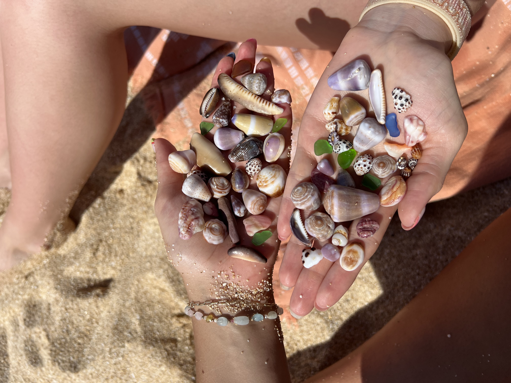
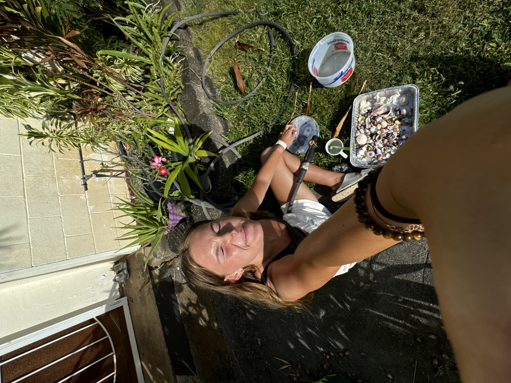
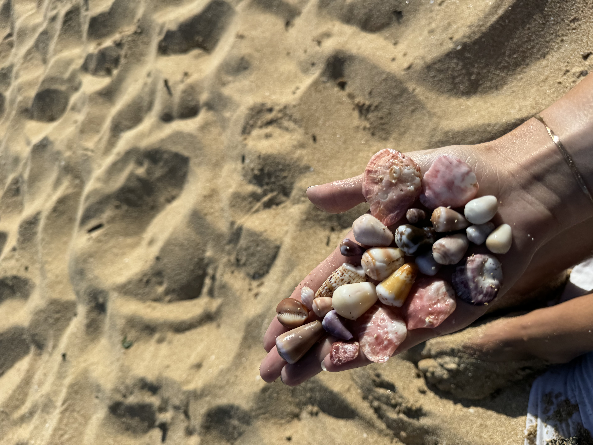

My Favorite Activity
Before coming to BYU Provo I attended BYU Hawaii. While living there shelling was one of the things I did most often. I love the thrill of finding your favorite shell!
-
My Top Shelling Locations
- Bikini Beach (rocky coves in water to go dive around)
- V land (hidden pockets at low tide)
- Wiamea (shells scattered all along the beach)
- Laniākea Beach (wide stretch for walking)
-
Shell Crafts & Decor Ideas
- Seashell picture frames (glued around a plain frame)
- Shell wind chimes (drilled holes + fishing line)
- Beach‐themed candles (embedded small shells in wax)
- Shell shadow boxes (arranged by color/size)
-
My Shell Collecting Process
- Find a beach with a good shelling reputation.
- Bring a bucket or bag to collect shells.
- Look for shells at low tide, especially in tidal pools.
- Be respectful of the environment and only take what you doens't have creatures in it.
- Clean and dry your shells when you get home.
Shell's I found with my Friend Audra:)
Cleaning my shells outside of my House!!
Shell haul from a random day!
Come shelling with me:
Sea Surface Temperatures Visualization